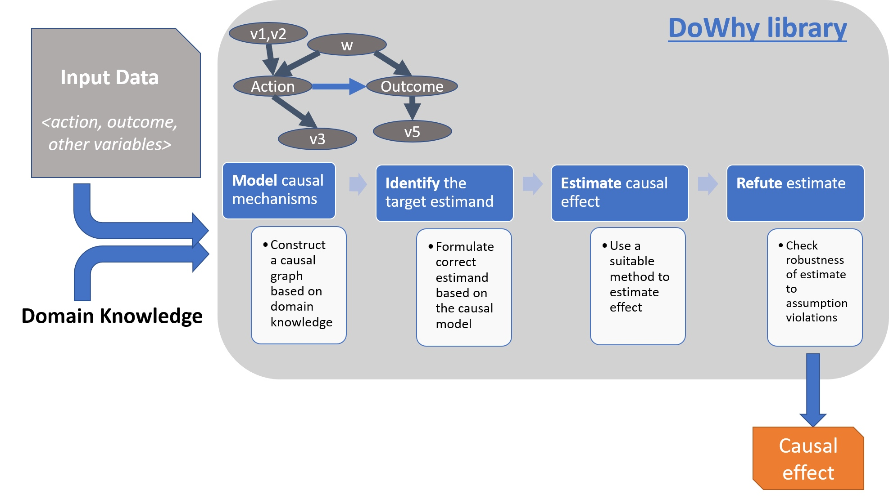
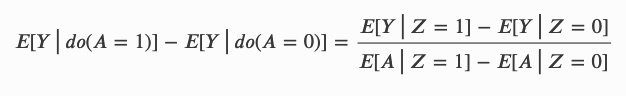
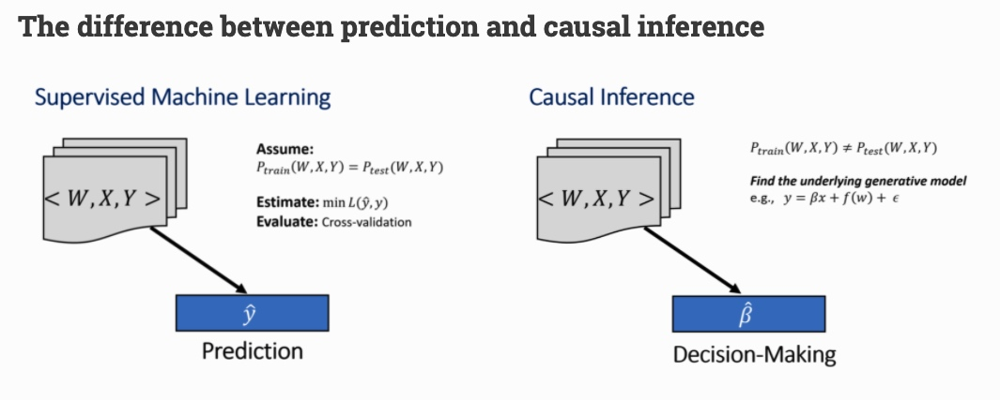

所属 Topic：因果推断 · 类型：工具
08. 工具：DoWhy#
DoWhy 适合把因果分析流程标准化为四步：
model -> identify -> estimate -> refute
1. 四步框架#
| 步骤 | 说明 |
|---|---|
| Model | 用 DAG 或变量列表表达因果假设 |
| Identify | 判断目标因果效应是否可识别 |
| Estimate | 用 PSM、回归、IV、DID 等方法估计 |
| Refute | 做反驳与稳健性检验 |
2. 适用场景#
- 需要把因果假设显式写出来；
- 需要统一管理后门、前门、IV 等识别路径；
- 需要做 refutation tests；
- 需要和 EconML 结合估计 CATE。
3. 和业务落地的关系#
DoWhy 的价值不只是调用模型，而是强制分析者回答：
- treatment 是什么；
- outcome 是什么；
- common causes 是什么；
- instrumental variables 是否存在；
- effect modifiers 是什么；
- 估计结果能否经受随机 common cause、placebo treatment、data subset 等反驳检验。
4. 原始资料#
完整安装、API、示例代码暂保留在旧文档：
旧笔记整合：DoWhy API、示例与 refute 流程#
迁移说明：保留原安装、识别、估计、refute、graph 输入等细节。
do why#
pip install dowhy
conda install -c conda-forge dowhy
1 基本介绍#
https://microsoft.github.io/dowhy/readme.html
github: https://github.com/Microsoft/dowhy
教程: https://github.com/amit-sharma/causal-inference-tutorial
其估计步骤如下
1. Model a causal inference problem using assumptions.
支持的图的输入格式: gml (preferred) and dot
3. Identify an expression for the causal effect under these assumptions (“causal estimand”).
4. Estimate the expression using statistical methods such as matching or instrumental variables.
5. Finally, verify the validity of the estimate using a variety of robustness checks.

DoWhy supports estimation of the average causal effect for backdoor, frontdoor, instrumental variable and other identification methods, and estimation of the conditional effect (CATE) through an integration with the EconML library.
1. 基本用法#
(1) model a causal problem#
先创建一个因果图，这个图可以不用完整，可以只提供部分图，dowhy会自己推断？
图的格式有两种： gml(preferred)和dot
除了图的格式外，也可以通过提供变量名称的方式，比如指定common causes, instrumental variables, effect modifiers, frontdoor variables, etc.
(2) 识别#
只是检测构建的因果图是否可识别，常用的识别方法：
- 后门准则
- 前门准则
- 工具变量
Z=>A=>Y, r(YZ)/r(ZA)

- Mediation (Direct and indirect effect identification)
(3) estimate#
支持的估计方法：
- 基于估计干预分配的方法
- 基于倾向的分层（Propensity-based Stratification）
- 倾向得分匹配（Propensity Score Matching）PSM
- 逆向倾向加权（Inverse Propensity Weighting）
- 基于估计结果模型的方法
- 线性回归（Linear Regression）
- 广义线性模型（Generalized Linear Models）
- 基于工具变量等式的方法
- 二元工具/Wald 估计器（Binary Instrument/Wald Estimator）
- 两阶段最小二乘法（Two-stage least squares）
- 非连续回归（Regression discontinuity）
- 基于前门准则和一般中介的方法
- 两层线性回归（Two-stage linear regression）
help(CausalModel.estimate_effect)查看
model.estimate_effect()r中自带的估计方法: "[backdoor/iv].estimation_method_name".
* Propensity Score Matching: "backdoor.propensity_score_matching" PSM
* Propensity Score Stratification: "backdoor.propensity_score_stratification" PSS
* Propensity Score-based Inverse Weighting: "backdoor.propensity_score_weighting" PSW
* Linear Regression: "backdoor.linear_regression"
* Generalized Linear Models (e.g., logistic regression): "backdoor.generalized_linear_model"
* Instrumental Variables: "iv.instrumental_variable"
* Regression Discontinuity: "iv.regression_discontinuity"
支持嵌入EconML和ecoml的方法 "backdoor.econml.path-to-estimator-class".
from sklearn.preprocessing import PolynomialFeatures
from sklearn.linear_model import LassoCV
from sklearn.ensemble import GradientBoostingRegressor
dml_estimate = model.estimate_effect(identified_estimand, method_name="backdoor.econml.dml.DML",
control_value = 0,
treatment_value = 1,
target_units = lambda df: df["X0"]>1,
confidence_intervals=False,
method_params={
"init_params":{'model_y':GradientBoostingRegressor(),
'model_t': GradientBoostingRegressor(),
'model_final':LassoCV(),
'featurizer':PolynomialFeatures(degree=1, include_bias=True)},
"fit_params":{}}
)
自带的一般是估计线性的，ecoml中可以支持一些比较复杂的方法。官方给出了一个例子说明，当DGP是非线性的时候，自带的方法估计的不准
https://microsoft.github.io/dowhy/example_notebooks/tutorial-causalinference-machinelearning-using-dowhy-econml.html
断点回归----
(4) refute the estimate#
the below refutation tests are based on either 1) Invariant transformations: changes in the data that should not change the estimate. Any estimator whose result varies significantly between the original data and the modified data fails the test;
random_common_cause
placebo_treatment_refuter
data_subset_refuter
-
添加随机混杂因子
如果假设正确，则添加随机混杂因子后，效应应该不会变化太多。 -
安慰剂干预
将干预替换为随机变量，如果假设正确，则因果效应应该接近于0 -
数据子集验证
在数据子集上估计因果效应，如果假设正确，因果效应应该变化不大。
EconMl和CausalML 可以使用 Conditional Average Treatment Effect (CATE)
2.简单版 padnas API#
example: https://github.com/microsoft/dowhy/blob/master/docs/source/example_notebooks/dowhy_causal_api.ipynb
import dowhy.api
import dowhy.datasets
data = dowhy.datasets.linear_dataset(beta=5,
num_common_causes=1,
num_instruments = 0,
num_samples=1000,
treatment_is_binary=True)
# data['df'] is just a regular pandas.DataFrame
data['df'].causal.do(x='v0', # name of treatment variable
variable_types={'v0': 'b', 'y': 'c', 'W0': 'c'},
outcome='y',
common_causes=['W0']).groupby('v0').mean().plot(y='y', kind='bar')r
说明:
- variable_types是一个词典，o代表定序变量，u代码非定序的离散变量，d代表discrete，c是连续变量，b二元变量
2. Graphical model和potential outcomes#
dowhy是使用了图模型和do-calculus来建模以及识别，使用potential outcomes来进行估计
建模四步骤:
- Model a causal inference problem using assumptions.
- Identify an expression for the causal effect under these assumptions (“causal estimand”).
- Estimate the expression using statistical methods such as matching or instrumental variables.
- Finally, verify the validity of the estimate using a variety of robustness checks.
This workflow can be captured by four key verbs in DoWhy:
- model
- identify
- estimate
- refute
和其他软件的区别：
- Explicit identifying assumptions： 通过图的方式来设置假设条件，并且可以用观测数据来验证
- Separation between identification and estimation： 识别和估计是奋力的。识别是因果问题，估计是统计问题。
- Automated robustness checks
- 支持扩展，支持econML和CausalML的方法扩展
3. quick start tutorial#
- 因果效应
$E[Y|do(A=1)] - E[Y|do(A=0)]$
为了估计这个效应，一个黄金准则就是进行随机试验。然而实际操作上并不总能实现。

QQ?
什么情况下回归估计的结果与因果的结果一样？？
https://github.com/microsoft/dowhy/blob/master/docs/source/example_notebooks/dowhy_causal_api.ipynb
4. load an input graph#
定义图的方式：
可以以str的形式，也可以以文件的形式，比如graph="../example_graphs/simple_graph_example.gml"
(1)gml 格式
# With GML string
model=CausalModel(
data = df,
treatment='X',
outcome='Y',
graph="""graph[directed 1 node[id "Z" label "Z"]
node[id "X" label "X"]
node[id "Y" label "Y"]
edge[source "Z" target "X"]
edge[source "Z" target "Y"]
edge[source "X" target "Y"]]"""
)
model.view_model()
(2) dot 格式
# With DOT string
model=CausalModel(
data = df,
treatment='X',
outcome='Y',
graph="digraph {Z -> X;Z -> Y;X -> Y;}"
)
model.view_model()
from IPython.display import Image, display
display(Image(filename="causal_model.png"))